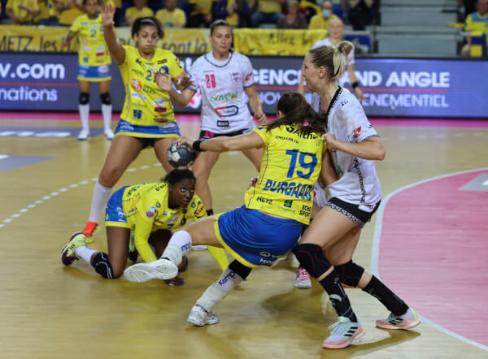
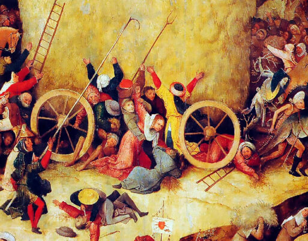
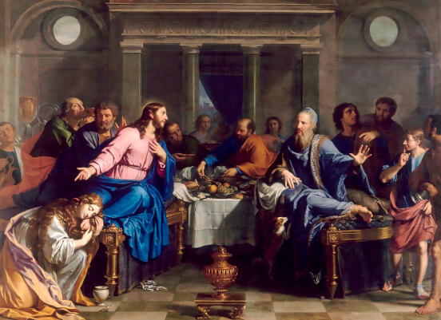
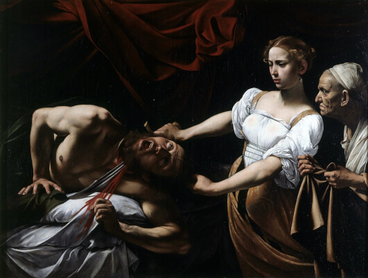
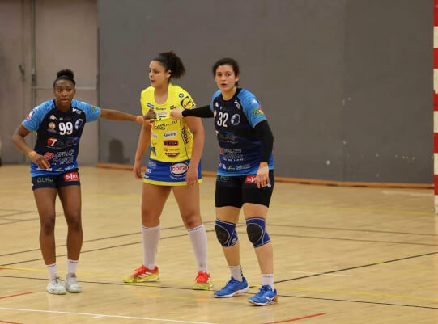
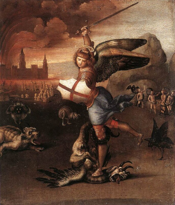
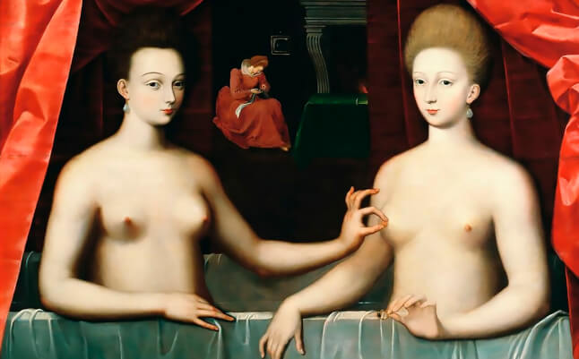

Bruna De Paula - © Viviane Zenner
Paris 92 vs Metz Handball, 2022-

La Nativité (1460-1475) - Piero della Francesca
Peinture à l’huile sur bois de peuplier, National Gallery, Londres. -

Une femme sur la plage, Biarritz, France, août 1951 - Robert Capa
International Center of Photography, New York.
© Robert Capa/International Center of Photography/Magnum Photos. -

Lutte de Jacob avec l’ange (1865) - Alexandre-Louis Leloir
Musée d’art Roger-Quillot, Clermont-Ferrand.

Louise Burgaard, Grâce Zaadi, Sarah Bouktit, et au fond Bruna De Paula - © Viviane Zenner
Metz Handball vs Brest Bretagne Handball, finale retour de LBE mai 2022-

Haywain (1500), détail - Jérôme Bosch
Huile sur bois, Musée du Prado, Madrid. -

Le Repas chez Simon (1656) - Philippe de Champaigne
Huile sur toile, Musée d’Arts, Nantes. -

Judith et Holopherne (1599-1602) - Le Caravage
Huile sur toile, Galerie nationale d’art ancien, Rome

Sarah Bouktit - © Viviane Zenner
Metz Handball vs Chambray Touraine Handball, 1/2 finale de Coupe de France-

-

Saint Michel terrassant le dragon (1503-1505) - Raphaël
Huile sur bois, Musée du Louvre, Paris. -

Portrait supposé de Gabrielle d’Estrées et sa sœur la duchesse de Villars (vers 1594) - peintre inconnu
Huile sur panneau de chêne, Musée du Louvre, Paris